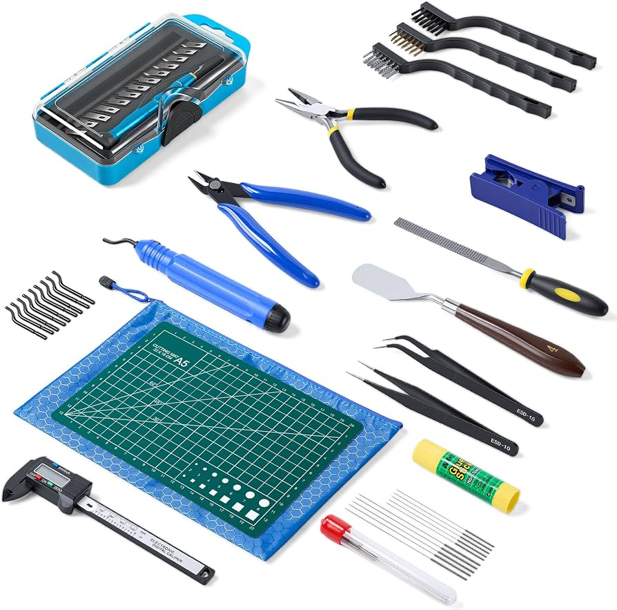

Printer Initial Setup
A successful 3D print starts with a properly prepared printer. The build plate should be clean, the filament should be loaded correctly, and the printer should be calibrated before beginning a print.
Many modern printers automate parts of the setup process, but users should still check the build surface, filament supply, and print settings before starting a job.
Common Filament Types
| Material | Difficulty | Common Uses |
|---|---|---|
| PLA | Easy | Models, prototypes, and general-purpose prints |
| PETG | Moderate | Functional parts and stronger prints |
| TPU | Moderate | Flexible parts |
| ABS | Advanced | Durable and heat-resistant parts |
Useful Tools

- Flush cutters
- Deburring tool
- Scraper
- Hex keys
- Glue stick
- Cleaning cloth and isopropyl alcohol
- Digital calipers
Basic Maintenance
- Build Plate Cleaning
- Removes oils and debris that may reduce first-layer adhesion.
- Nozzle Inspection
- Helps identify buildup or clogs that can affect extrusion.
- Filament Storage
- Keeping filament dry helps prevent poor print quality caused by moisture.